Chunky racers: the unicorn and the fairy as game characters
The unicorn and the fairy built straight in three.js from a handful of blocks, in two looks, beside today's riders and the approved Mallow sheets. Left to right runs the spectrum: Today, A, close match (boxy, hard-edged, flat colour, in the style of the kart-game reference), B, in between (A's blocks, softened, with the Mallow faces, curls and feathers), and the Mallow sheet as reference. Every picture except the Mallow sheet is a render of the real code; click any picture for full size.
Turntable
Front, three-quarter, side and back, in the flying pose. Both characters at the same scale.

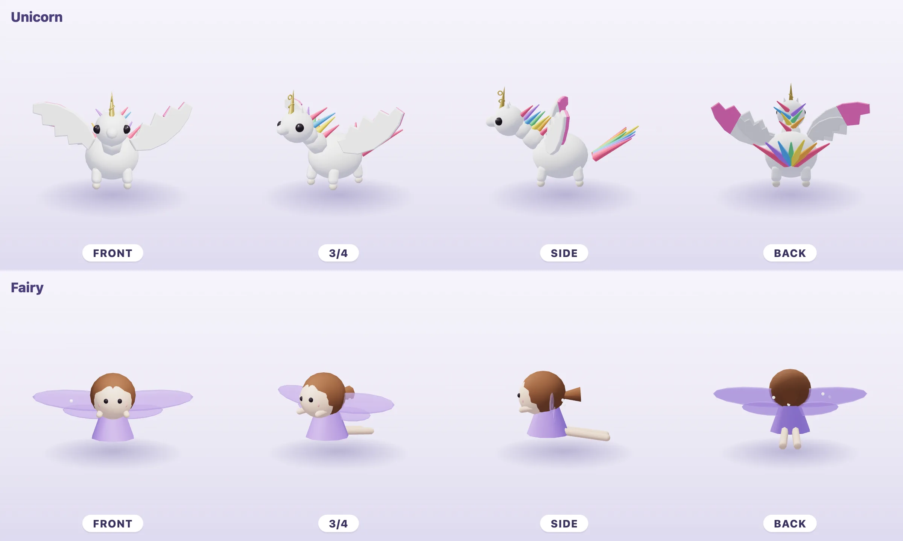

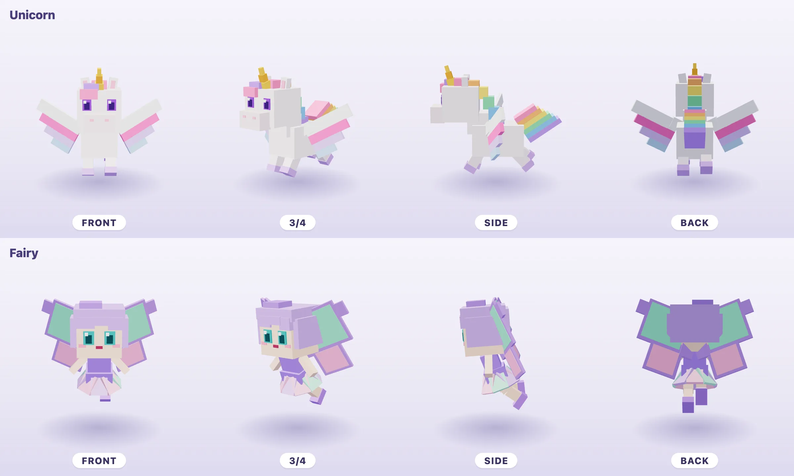

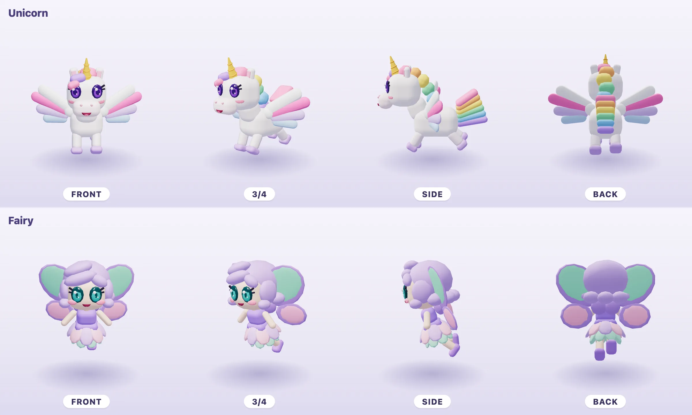

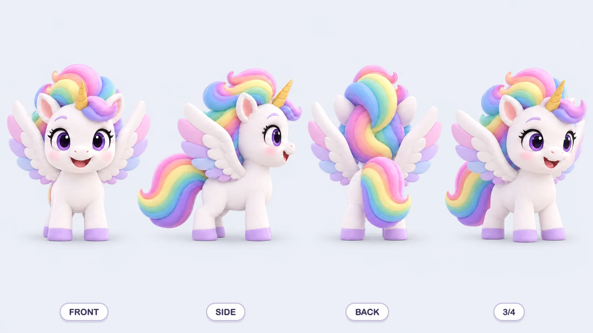

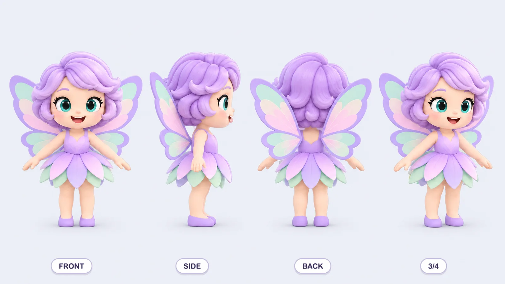
Pick card
The real pick-screen card and badge, with each look's portrait rendered the way the portrait script frames it.

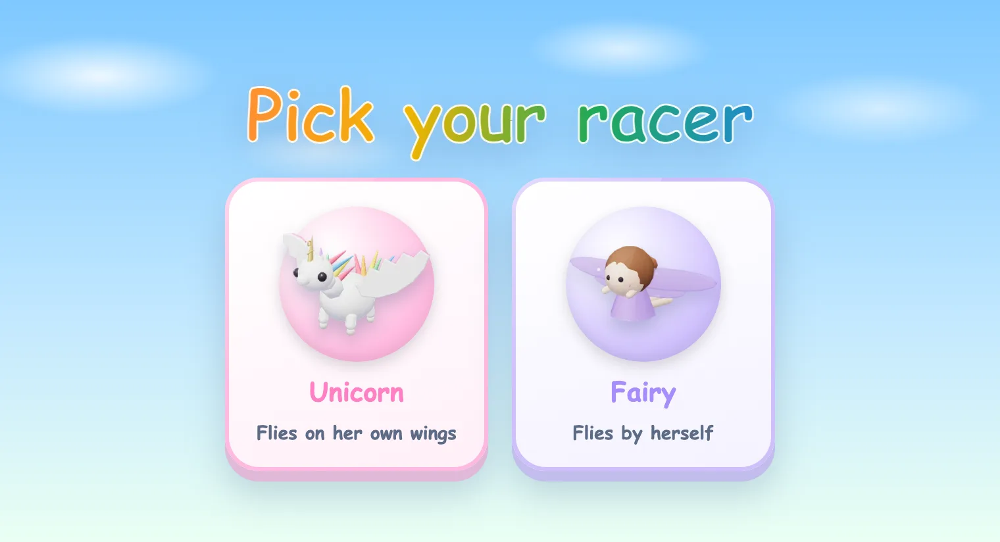

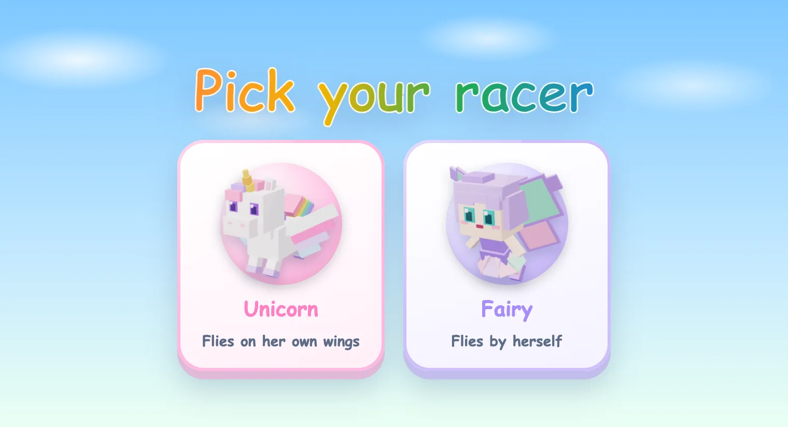

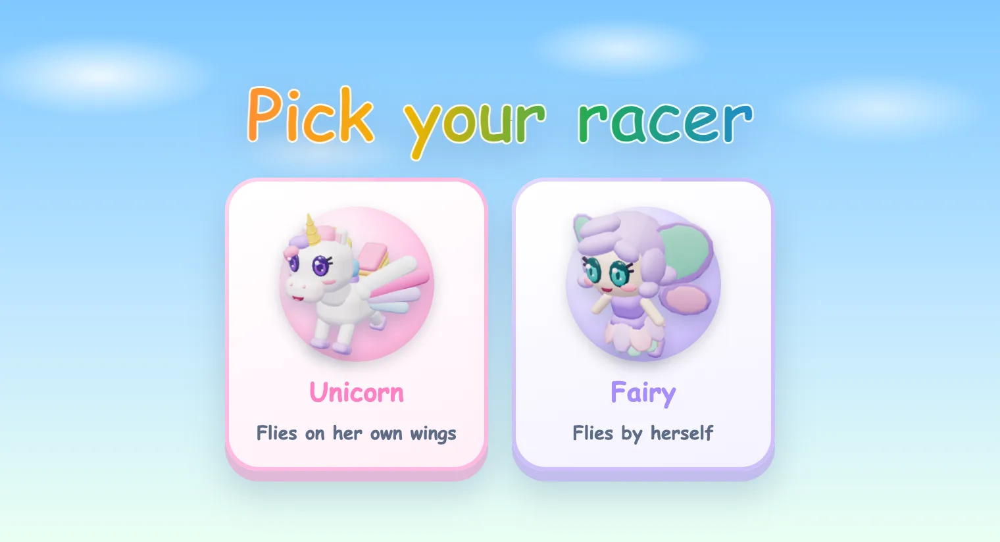

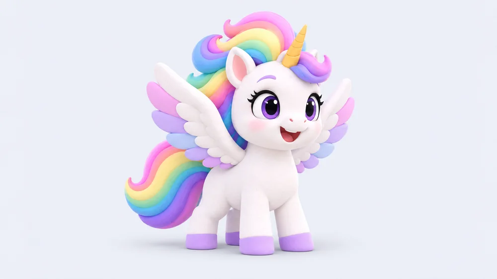

In race
Both flying in the real racer sky (the game's own scene, camera and light) at race size, banking into a turn so the chase camera sees them from behind and to the side. The chip in each corner is measured from the models: the share of the frame's height each one fills. iPad landscape, 1180 by 820.

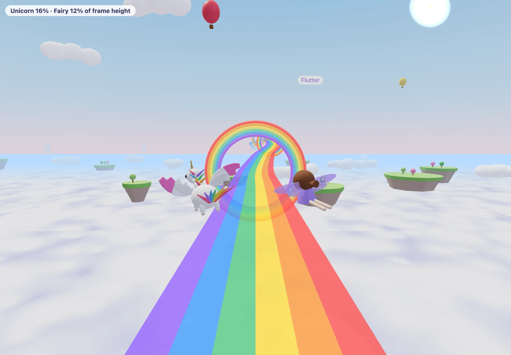

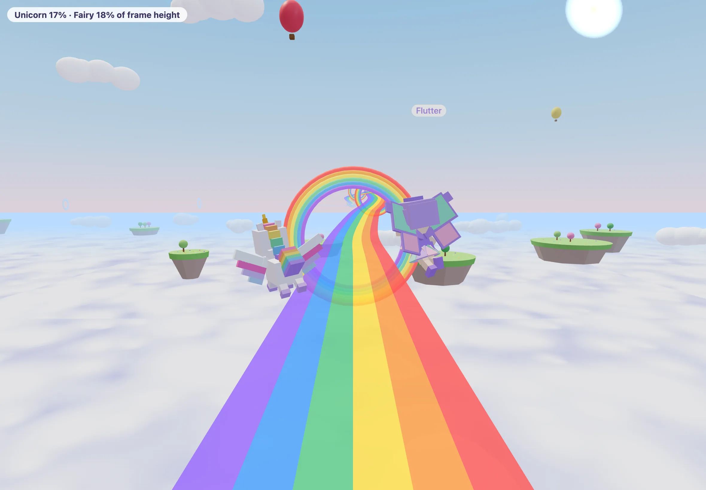

What each costs
| Draw calls (unicorn / fairy) | Triangles (unicorn / fairy) | Code per character | Another character in this look | |
|---|---|---|---|---|
| Today | 46 / 23 | 4,156 / 2,688 | in riders.ts | shipped |
| A | 5 / 4 | 612 / 588 | about 70 / 60 lines | about 1 to 2 hours of agent time, three review renders |
| B | 6 / 5 | 7,126 / 7,126 | about 90 / 75 lines | about 2 to 3 hours: A's frame plus the face and curls |
Both looks share a 150-line kit (boxes, rounded blocks, balls, pills, curls merged into one mesh per part) and a 190-line rider with the game's flight feel. No textures, no models, no Blender.
Recommendation: B, in between
B keeps what was approved in the Mallow sheets: big glossy violet and teal eyes with lashes, blush, a small open smile, the spiral gold horn, rainbow locks, layered feathers and butterfly wings. It still reads as a game character, both read at race size, and each costs five or six draw calls against today's 23 and 46.
The weakest option is A's fairy. From the chase camera she is a cluster of lavender panels, and up close her square face looks plain beside the Mallow sheet. A's unicorn is good; A as a whole is the cheapest and most consistent with the reference, but it gives up the faces.